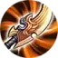

Status data
Hero baru S16. Kit dari hub-game (Global); build A dan B dari rekomendasi resmi CN (item ID sama dengan katalog Global), C diturunkan dari kit. Belum ada data Popular Global. Lihat analisis.md.
Gap
- Belum ada Popular build Global di hub-game. Re-check saat data Global muncul.
- Beda hero dengan
flowborn(Mage) danflowborn-marksman(Farm Lane).
Spell
Rekomendasi Spell S16 dari spells/by-hero (tanpa invent).
Default

Situasional
Tidak ada spell situasional di sheet (hanya Default).
Catatan: Jungle MAIN: Smite wajib untuk beli jungling item. Halaman CN menulis Flash/Execute, tapi tidak berlaku untuk Jungle.
A Kondisi A Dive burst sustain
Proses craft
Sumber: sheet build.md · Preset 12 (urutan sesuai sheet) · label dari harga katalog item S16: Aktif = 6 item aktif kondisi ini · Setengah jadi = komponen (< 1000 gold; boots 700 gold dihitung item jadi) · Situasional = item jadi di luar 6 aktif



Item aktif (6)
Situasional tambahan
Arcana (10 + 10 + 10)


Rules: Jungle item wajib (Rapacious Bite + Smite). Cap CDR 40%. Shared actives.
B Kondisi B Anti-armor backline
Proses craft
Sumber: sheet build.md · Preset 12 (urutan sesuai sheet) · label dari harga katalog item S16: Aktif = 6 item aktif kondisi ini · Setengah jadi = komponen (< 1000 gold; boots 700 gold dihitung item jadi) · Situasional = item jadi di luar 6 aktif
Item aktif (6)
Situasional tambahan
Arcana (10 + 10 + 10)
Rules: Jungle item wajib (Rapacious Bite + Smite). Cap CDR 40%. Shared actives.
C Kondisi C Anti-heal skirmish
Proses craft
Sumber: sheet build.md · Preset 12 (urutan sesuai sheet) · label dari harga katalog item S16: Aktif = 6 item aktif kondisi ini · Setengah jadi = komponen (< 1000 gold; boots 700 gold dihitung item jadi) · Situasional = item jadi di luar 6 aktif
Item aktif (6)
Situasional tambahan
Arcana (10 + 10 + 10)
Rules: Jungle item wajib (Rapacious Bite + Smite). Cap CDR 40%. Shared actives.